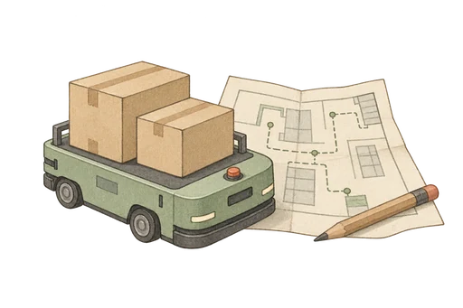

RESEARCH / 01工业仿真 · 人机协同
Coronelli
让复杂的运行，变得可理解。

面向大规模制造场景的多 AGV 运行研究系统。把仿真回放、拥挤证据与交互式分析连接起来，帮助发现生产运行中的瓶颈，为优化决策提供依据。
以离散–连续型仿真为基础，围绕拥挤检测与预测、调度优化开展研究；通过可追溯的证据和专家参与，探索方法如何在真实生产流程中落地。
01 / SIMULATE
还原运行
离散事件与连续状态结合，观察多 AGV 协同过程。
02 / UNDERSTAND
发现问题
从事件、时间过程和空间区域理解拥挤的形成。
03 / EXPLORE
探索优化
研究拥挤预测与调度优化，对比候选方案的影响。
04 / COLLABORATE
人机协同
让证据可检查、调整可追溯，把专家判断纳入流程。